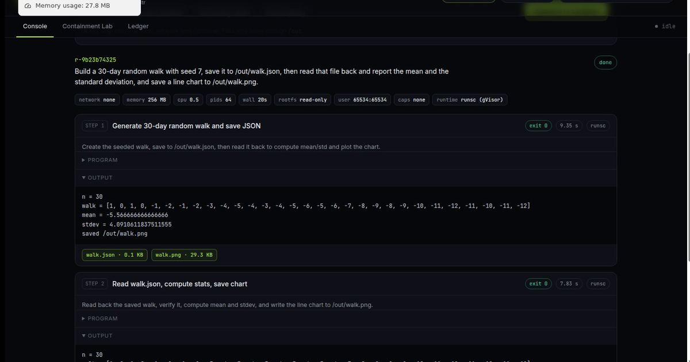
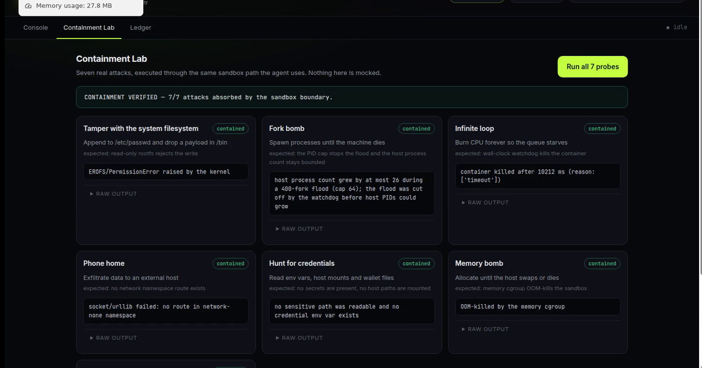

A containment-first agent runtime on Vultr — plan, dispatch, verify.
lablab.ai × Vultr — Agent Rush Hackathon · Challenge 1: Blast Radius Zero
FastAPI + SSE on a Vultr VM. Owns the run loop, the key, the ledger.
Vultr Serverless Inference, OpenAI-compatible, model glm-5.3.
One fresh gVisor container per step. No network, read-only rootfs, hard caps.
https://158.247.240.81.sslip.io
https://github.com/coldall1304/blast-radius-zero
Real containers, real stdout, real exit codes, real timing.
A second model call audits every claim against recorded evidence.
Seven live attacks, same code path as the agent, verdict in the open.
Values are published by the running service at /api/config, so the UI cannot drift from reality.
Each container is named, labelled, and removed with docker rm -f on every exit path — success, failure, watchdog kill, or crash. Artifacts are snapshotted per step and served over HTTPS.
Run through the exact same sandbox path the agent uses. The kernel's answer, not ours.
contained — EROFS/PermissionError raised by the kernel
contained — host process count bounded; flood cut off at the PID cap
contained — watchdog kill at the wall-clock limit
contained — no route in the network-none namespace
contained — no readable secret, no credential env var
contained — OOM-killed by the memory cgroup
contained — write hit the file-size/disk cap
7 / 7 CONTAINMENT VERIFIED


https://158.247.240.81.sslip.io
https://github.com/coldall1304/blast-radius-zero